Five header looks
Which look should every header in the editor take? Here are the five you asked for, each with less room around the triangle.
editor -- polishing the editor for a public preview on the web.All five keep what you liked: one bar, with the triangle, tabs and tools on one line, and a closed card leaves only the bar.
Each picture shows the same four things:
- the file tabs, on the left
- the Views card, open, with the same card closed under it
- the Views card when narrow, on the right
The triangle has less room in all five, measured in the browser:
- It now sits 8px from the card's edge, and was 15px.
- The first tab starts 22px from the edge, and was 34px.
- The triangle and the first tab share one centre line in every option.
A · The raised pill, tightened
What you liked, with less room around the triangle and the tabs closer together.
- Good: It's the one you've already seen, and it's clear at a glance which tab is chosen.
- Not so good: The pill is the loudest thing in the bar, in every header at once.
- To build it: Settings only: no new attribute.
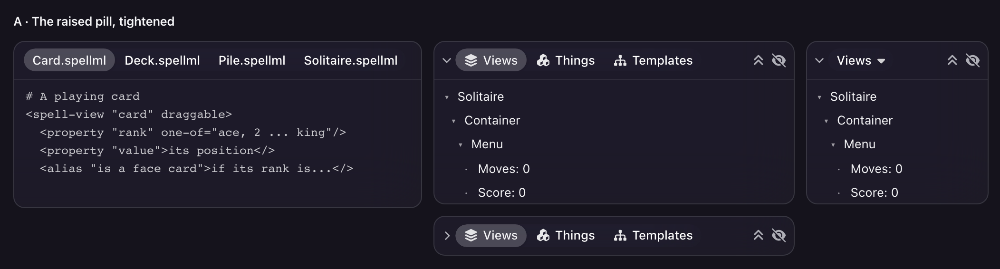
Glass light
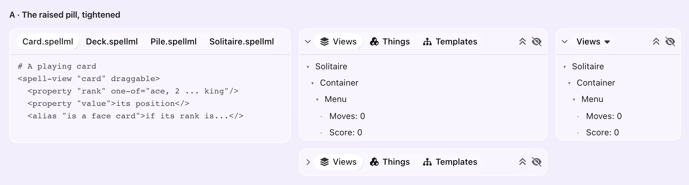
Fruity dark
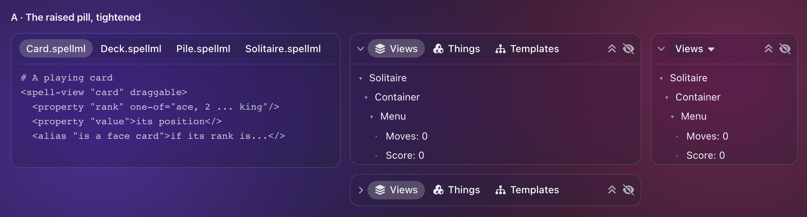
Fruity light
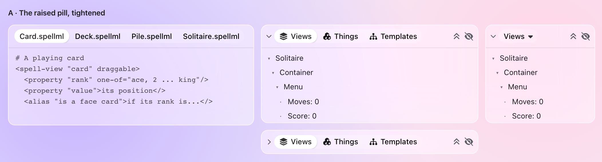
B · Quiet words, the chosen one in violet
No pill at all. The other tabs fade back, and the chosen one is violet and heavier.
- Good: The calmest with the words still showing, so several headers on one screen stay quiet.
- Not so good: The chosen tab is marked by colour alone, so it's the weakest in a theme with a pale accent.
- To build it: One small addition to the header look.
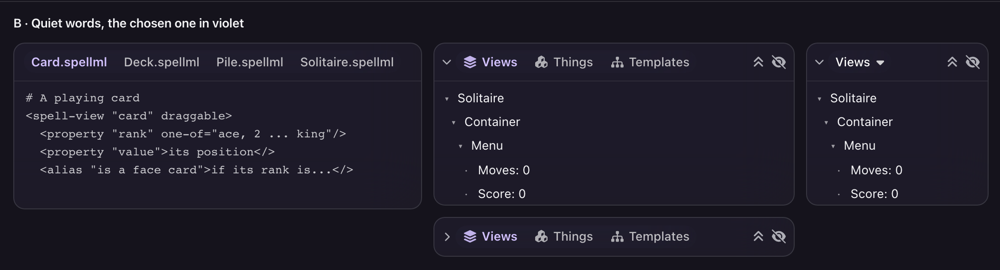
Glass light
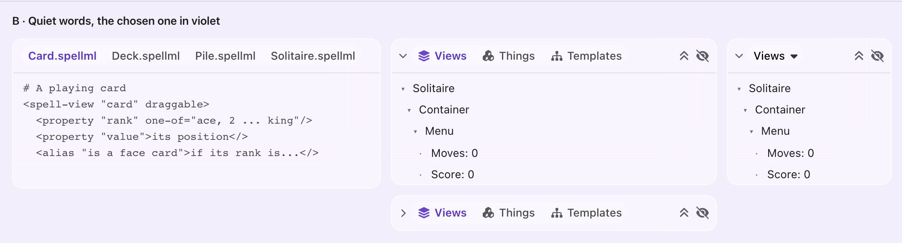
Fruity dark
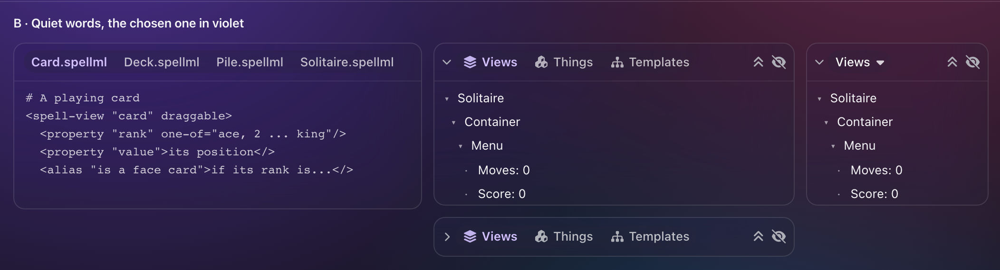
Fruity light
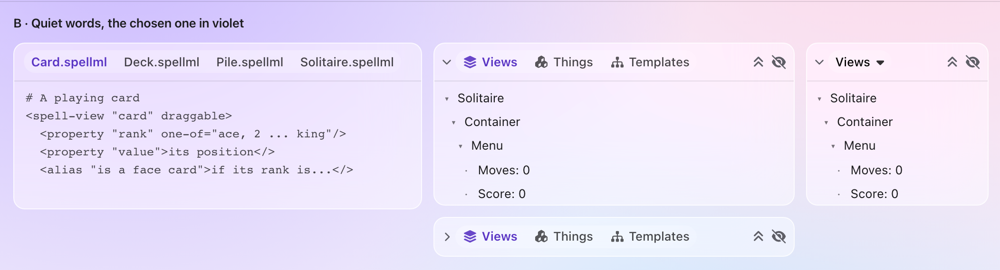
C · Icons, and the chosen one says its word
The tabs you aren't on shrink to their icons. The chosen one shows its icon and word, in a pill.
- Good: The tightest with every tab still one click away, and it leaves the most room for tools.
- Not so good: You have to know what the icons mean, and the row shifts as you switch. Files have no icons, so file tabs keep their words and look like option A.
- To build it: One small attribute, for tabs that hide their words.
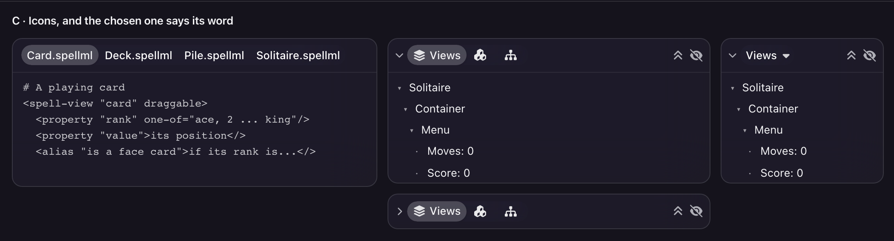
Glass light
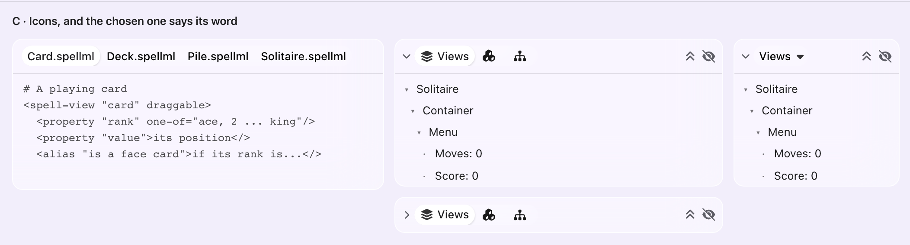
Fruity dark
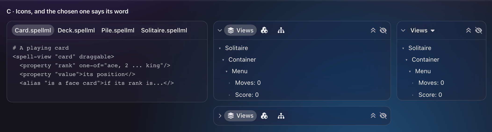
Fruity light
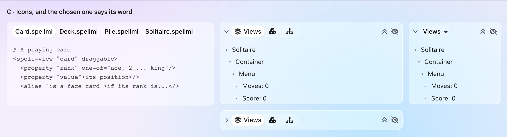
D · Tahoe: two glass capsules
The tabs sit in a glass capsule with the chosen one raised, and the tools get a capsule of their own.
- Good: The closest to macOS Tahoe's toolbars, and it uses the capsule the top bar already has.
- Not so good: The busiest: this brings back a track you said felt bolted on, and two capsules in every header add shapes.
- To build it: Settings, and the capsule look on the right-hand tools.
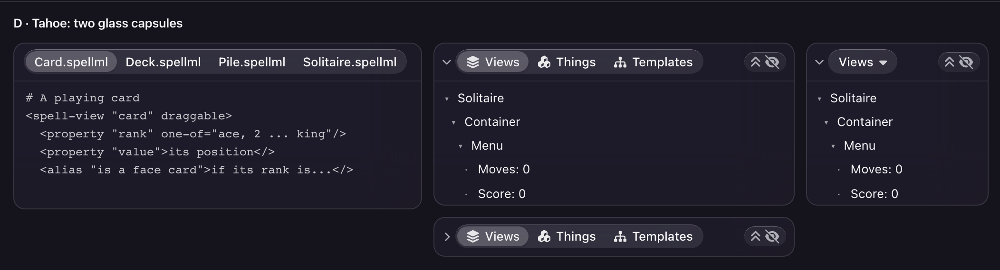
Glass light
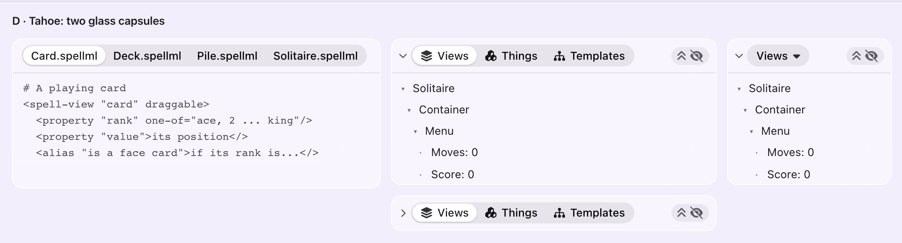
Fruity dark
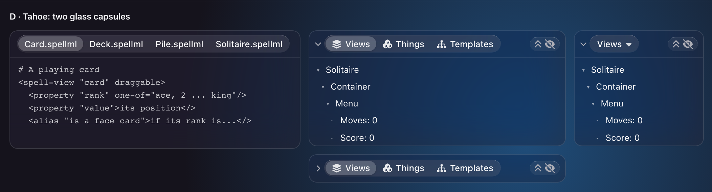
Fruity light
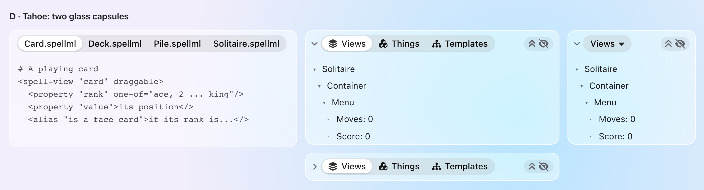
E · A title, and the rest behind a menu
The triangle, then the chosen view as a bold title with a small menu. The others are behind it.
- Good: The quietest and tightest, and the same at every width: it's what the others already turn into when narrow.
- Not so good: Everything else is two clicks away, which is wrong for file tabs, where you switch all the time and want to see the names.
- To build it: One small attribute, to keep the narrow form at every width.
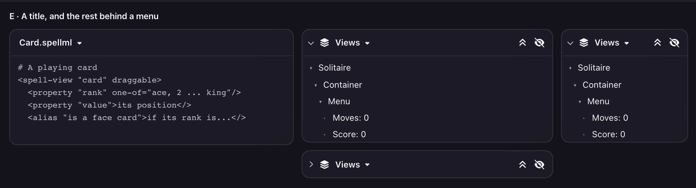
Glass light
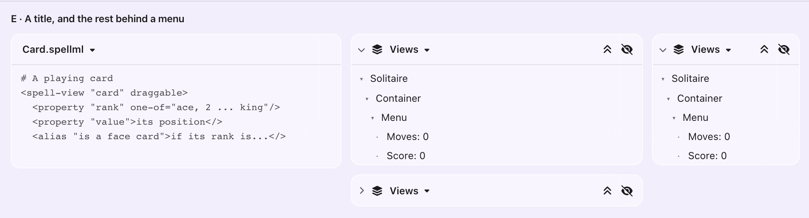
Fruity dark
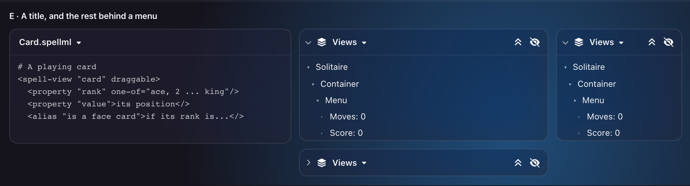
Fruity light
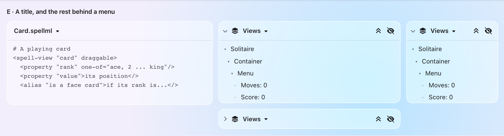
-
They're the real
<ui-panel>and<ui-toolbar>, on Spell UI as it is onmain, with a few lines of extra CSS for each option. It's in the scratch page. - That page can't be used live: the page server adds an older copy of the widgets to it, which breaks the bar. So these are pictures, taken with that copy blocked.
- E's title is plain markup drawn to match the narrow dropdown, so it doesn't open.
- A line under B's chosen tab wouldn't draw from outside the widget, so B shows colour alone. A line can be added when it's built, if you'd like one.
- They were taken in a headless browser at twice the size, not on a real Mac.
Which of these five should every header in the editor take, the file tabs included? I'd lean to A, the look you already liked, but it's your eye that counts here. None is the obvious answer, and you can type another.
What you liked, with less room around the triangle and the tabs closer together.
No pill at all. The other tabs fade back, and the chosen one is violet and heavier.
The tabs you aren't on shrink to their icons. The chosen one shows its icon and word, in a pill.
The tabs sit in a glass capsule with the chosen one raised, and the tools get a capsule of their own.
The triangle, then the chosen view as a bold title with a small menu. The others are behind it.